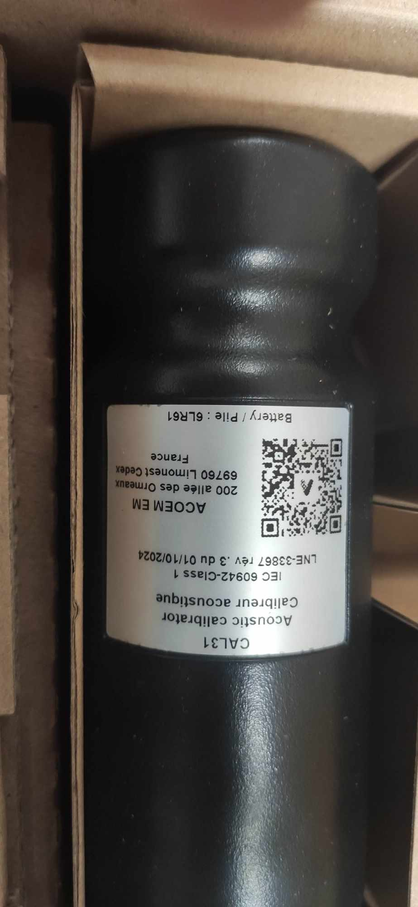
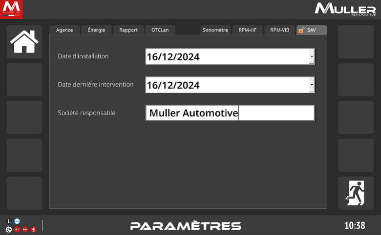
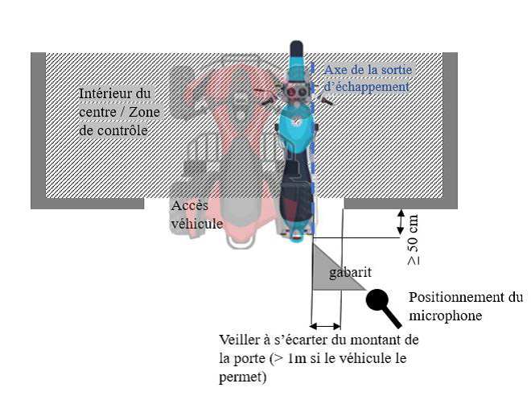
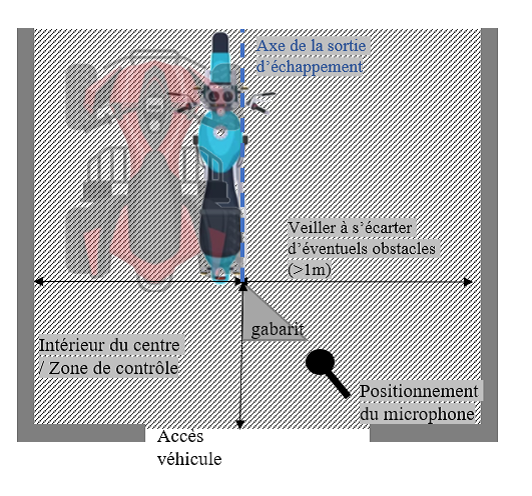
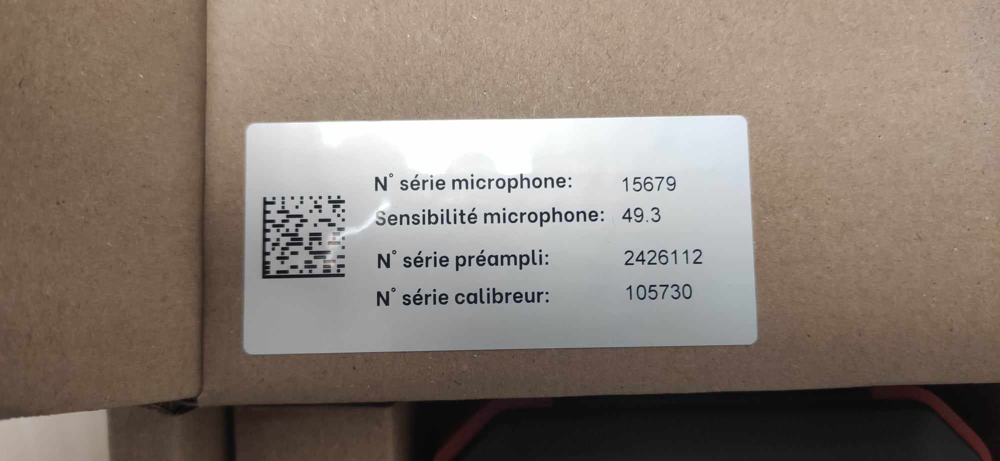
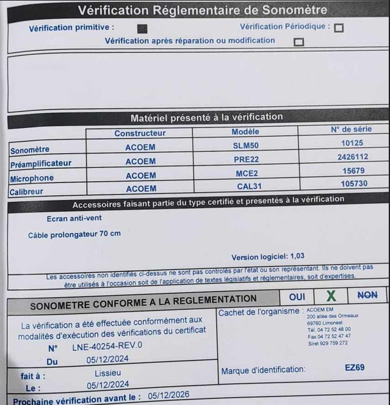
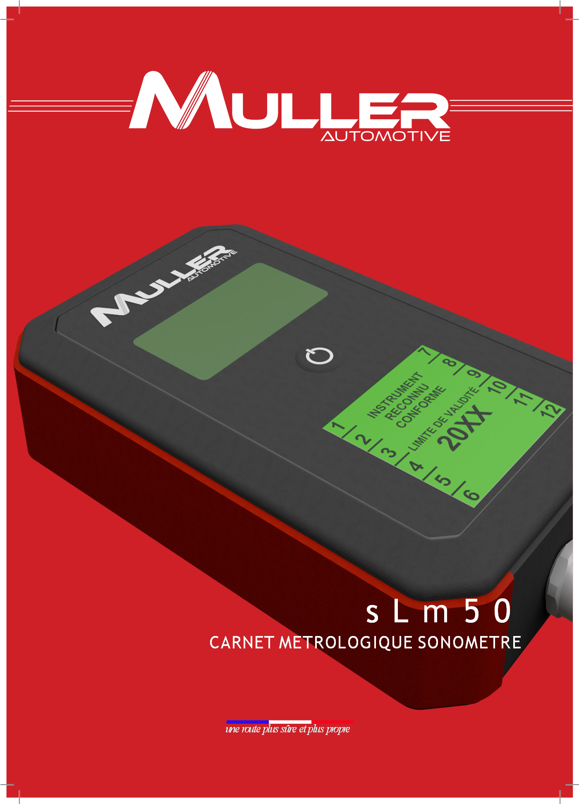

Le SLM 50 est un dispositif de mesure du niveau sonore homologué pour le contrôle technique des véhicules de catégorie L (deux-roues, scooters, cyclomoteurs). Son déploiement est obligatoire depuis mars 2025 dans tous les centres de CT France.
📋
Références réglementaires
CDC-8 index B · IT CL F8D · INS-C-21 · Certificat LNE N° LNE-40254 rév.0 · Homologation OTC / UTAC
Mise en condition, positionnement du microphone, méthode de mesure.
3
Mise en service réglementaire
Vérifications obligatoires, numéros de série, carnet métrologique.
4
Maintenance & calibration
Contrôles périodiques, limite de conformité, procédure de calibration sur site.
Qualification
Qualification techniciens
Formation habilitante
Qualification méthodes
INS-C-21
Qualification moyens
Aucun étalon requis sur site
Organisme de contrôle
OTC (Organisme Technique Central) + UTAC
Certification métrologique
Certificat LNE N° LNE-40254 rév.0
Classe sonométrique
Classe 2 — IEC 61672-1
Contexte réglementaire
Depuis mars 2025, le contrôle du niveau sonore est intégré au contrôle technique des véhicules de catégorie L. Le sonomètre mesure le bruit en dB(A) à l'échappement. En cas de dépassement de la valeur limite U.1 (issue de la carte grise), le véhicule est soumis à une défaillance majeure.
⚠️
Catégories L concernées
L1e (cyclomoteurs ≤45 km/h) · L3e (motos) · L5e (tricycles) — tous véhicules dont la carte grise mentionne les valeurs U.1 (niveau sonore) et U.2 (régime moteur).
Chapitre 02 — Installation
Installation & Configuration
Vidéo — Unboxing
Unboxing & assemblage du SLM50
Contenu du carton
Contenu livraison

Calibreur inclus
Boîtier SLM50
Microphone & préampli
Paramétrage logiciel — SLM50-TAB

Interface Paramètres SAV — onglet visible après saisie du code SAV 6836 (date d'installation, société responsable)
1
Procédure NT 1240
Suivre la NT 1240 — Procédure d'appairage & configuration sonomètre et modules RPM.
2
Code SAV 2026
Code d'accès au menu SAV : 6836. L'option "Éteindre" n'est plus présente dans ce menu.
3
Résolution écran
Tablette SLM50-TAB : 1920 × 1200. PC : 1920 × 1080 ou 1024 × 768.
Configuration avec ACTIGAS
💡
Version StartApp spécifique
Pour une utilisation combinée SLM50 + ACTIGAS, utiliser impérativement : StartAppSetup_FRA - 1_31_1 (version dédiée sonomètre).
1
Sauvegarde PC
Menu config (savmul) → Onglet "Autre" → Export → Choisir emplacement (clé USB recommandée).
2
Flashage WIN10 → WIN11
Suivre la procédure de migration Windows 10 vers Windows 11 (fichier proc fourni).
3
Importation configuration
Après installation, importer la configuration sauvegardée depuis la clé USB.
Basculer SLM50 ↔ ACTIGAS
Dans le menu SAV, saisir le chemin de l'application cible :
Via REGEDIT : HKLM\SOFTWARE\WOW6432Node\ATAL\ATGIEG → VNC_Path
Chapitre 03 — Utilisation sur véhicule
Utilisation sur véhicule
Vidéo — Démonstration
Démonstration utilisation SLM50 sur véhicule
Mise en condition du véhicule
🔴
Avant toute mesure — conditions obligatoires
La transmission aux roues ne doit PAS être assurée : point mort, position neutre ou parking (boîte auto). Si non débrayable : béquille centrale, levage adapté ou rouleaux fous.
Transmission en point mort (neutre / parking pour boîte auto)
Si transmission non débrayable → béquille centrale ou moyen de levage
Dispositif de départ à froid manuel NON actionné
Moteur à température normale de fonctionnement
Positionnement du véhicule
Position principale
Porte d'accès
Échappement vers l'extérieur, porte ouverte
Si impossible
Intérieur centre
S'éloigner max des obstacles (arrière / côtés)
Microphone
Gabarit inclus
Aligné sur l'axe de la ligne d'échappement
Schémas de positionnement du microphone

Configuration A — Porte d'accès ouverte Gabarit aligné axe échappement, s'écarter du montant (>1m si possible)

Configuration B — Intérieur du centre S'éloigner au maximum des obstacles arrière et latéraux (>1m)
📐
Gabarit de positionnement
Le microphone est positionné à l'aide du gabarit fourni avec le SLM50, aligné sur l'axe de la ligne d'échappement. Le gabarit est la seule référence valide pour le positionnement réglementaire.
Méthode de mesure
1
Dispositif régime moteur
Mettre en place et vérifier la cohérence du signal RPM (pince induction / capteur vibratoire / pince batterie / HF).
2
Appliquer le guide opérateur
Suivre la méthode définie par le guide opérateur présent sur le dispositif SLM50.
3
Déterminer U.1 et U.2
U.1 = niveau sonore (dB), U.2 = régime moteur (tr/min) — selon prescriptions de la carte grise.
4
Résultat
Comparaison du niveau mesuré à la valeur U.1 (+ tolérance 5 dB). Dépassement = défaillance majeure.
Cas particuliers & commentaires obligatoires
U.1 / U.2 absents ou incohérents
Saisir Z.8.0.0.1 — mesure non réalisée
Régime moteur impossible à obtenir
Saisir Z.8.0.0.2 — mesure non réalisée
Résultat "contrôle impossible"
Saisir défaillance 0.4.1.d.7
Calibration quotidienne non conforme
Saisir défaillance 0.4.1.d.7
Chapitre 04 — Mise en service
Mise en service réglementaire
La mise en service est réalisée par un technicien qualifié Muller Automotive. Elle valide la conformité métrologique et fonctionnelle avant la première utilisation en contrôle.
Compartiment batteries (Varta Industrial Pro AA) + plaque signalétique verso

Étiquette carton : N° série micro, N° préampli, N° calibreur — à vérifier à la livraison
Fiche de vérification réglementaire

Fiche de vérification réglementaire SLM50 — à compléter et conserver avec le carnet métrologique (LNE-40254, conformité, prochaine vérification 05/12/2026)
Carnet métrologique

Carnet métrologique sLm50 — document officiel à renseigner à la mise en service
⚠️
Transmission obligatoire des numéros de série
Transmettre impérativement à Muller Automotive : N° série sonomètre + calibreur + pollution si présente (AT505, AT605, ACTIOBD). Demande d'attestation de conformité : qualite@mullerautomotive.fr
Checklist de mise en service
Vérification présence des marques de contrôle et scellements (intégrité)
Vérification concordance N° de série boîtier / carnet métrologique
Vérification présence du calibreur (réf. 105730)
Vérification présence du carnet métrologique (renseigné : propriétaire, adresse)
Vérification du carnet de suivi (réf. AMDOC-C-85)
Test de tous les dispositifs RPM sur véhicule catégorie L (obligatoire)
Obligation véhicule catégorie L lors de la mise en service
Dispositifs RPM à tester
Dispositif 1
Pince induction
Sur fil d'allumage
Dispositif 2
Capteur vibratoire
Sur moteur
Dispositif 3
Pince batterie
Sur borne batterie
Dispositif 4
Capteur HF
Haute fréquence
Indicateur visuel du signal RPM
LED clignotante verte (lente)
Signal RPM présent
LED clignotante verte (s'accélère)
Qualité du signal en amélioration
LED verte fixe
Signal de bonne qualité — mesure possible
Paramètres affichés
Qualité signal · Nb bougies · Nb temps · Nb cylindres
Chapitre 05 — Maintenance
Maintenance réglementaire
La maintenance périodique est réalisée par un technicien qualifié Muller Automotive. Elle garantit la conformité métrologique continue du sonomètre.
Checklist maintenance périodique
Vérification présence des marques de contrôle, scellements et intégrité
Contrôle visuel accessoires RPM (état général)
Contrôle visuel trépied & gabarit (état général)
Contrôle de l'impression (papier ou PDF)
Contrôle zone de positionnement (image IT CL F8) — bon état
Renseignement page intervention dans carnet de suivi
Vérification version logicielle
Renseignement carnet métrologique + rapport technique (fiche intervention)
Zones de positionnement — 2 configurations
Configuration A
Porte d'accès
Gabarit aligné axe échappement, porte ouverte
Configuration B
Intérieur centre
Max éloigné des obstacles arrière/côtés
✅
Sauvegarde des paramètres
Localisation du fichier de configuration : C:\Programmes (x86)\SLM50\bin\Sonometre.ini
Aucune limite de stockage pour les archives. Résolution recommandée tablette : 1920×1200.
Chapitre 06 — Calibration
Calibration sur site
📐
Calibration quotidienne obligatoire
Avant chaque session de contrôle, le technicien doit vérifier la calibration du sonomètre avec le calibreur fourni. Un résultat non conforme interdit l'utilisation du dispositif.
Limite de conformité
Tolérance autorisée
−2 / +1 dB
Écart accepté lors de la calibration
Si écart dépassé
Retour fabricant
Avec carnet métrologique
Accès calibration
Menu SAV
Menu spécifique technicien
Procédure de calibration
1
Accès au menu SAV
Saisir le code SAV 6836 → Accéder au menu calibration.
2
Brancher le calibreur
Positionner le calibreur (réf. 105730) sur le microphone. Vérifier l'étanchéité du contact.
3
Lancer la mesure
Démarrer la calibration depuis le logiciel. Le résultat s'affiche en écart par rapport à la valeur étalon.
4
Interpréter le résultat
Conforme : écart compris entre −2 et +1 dB → utilisation autorisée. Non conforme : retour SAV obligatoire.
5
Traçabilité
Consigner le résultat de calibration dans le carnet de suivi (date + heure).
🔴
Calibration non conforme = arrêt immédiat
Si l'écart dépasse la tolérance −2/+1 dB, le sonomètre ne doit plus être utilisé jusqu'à retour en réparation chez Muller Automotive, carnet métrologique joint.
Chapitre 07 — Révision
Flashcards — mémorisation
Cliquez sur chaque carte pour révéler la réponse. Objectif : maîtriser toutes les cartes avant le QCM.
Quelle est la tolérance de calibration du SLM50 ?
Cliquez pour révéler
−2 / +1 dB
Si l'écart dépasse cette plage → retour fabricant obligatoire avec carnet métrologique.
Code SAV 2026 du SLM50 ?
Cliquez pour révéler
6836
Donne accès au menu SAV incluant la calibration et les paramètres avancés.
Quelle défaillance saisir si la calibration quotidienne est non conforme ?
Cliquez pour révéler
0.4.1.d.7
Panne du dispositif de mesure du niveau sonore lors du contrôle.